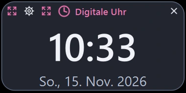
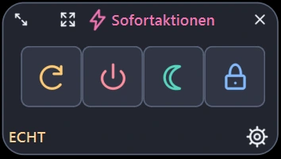
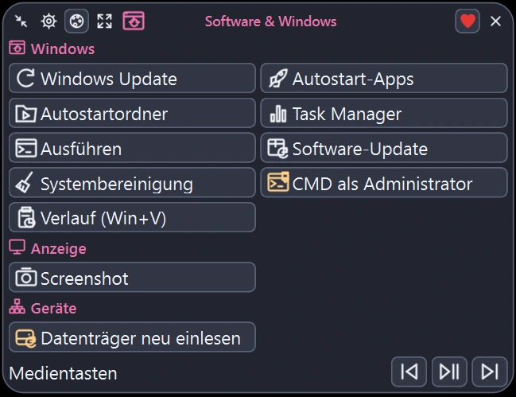
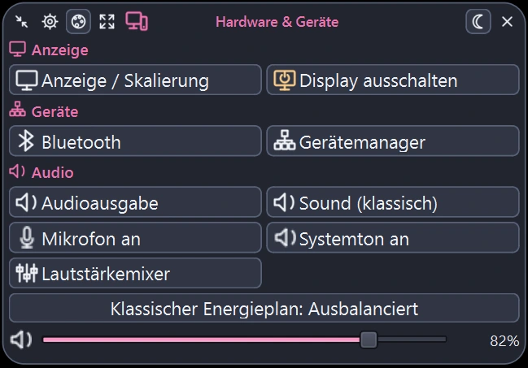
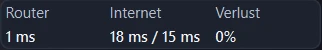
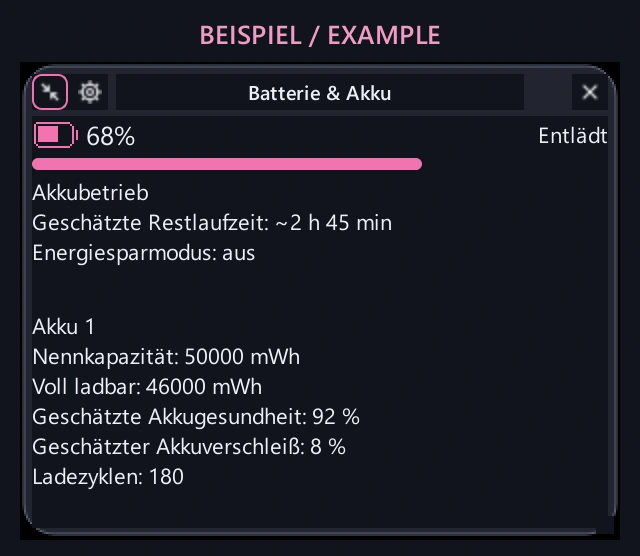
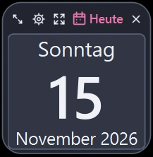
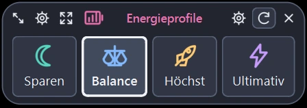

MiniDesk 1.0
Alle 17 Gadgets im Detail
Entdecke, welche Funktionen MiniDesk bietet und wie du die einzelnen Gadgets im Alltag nutzen kannst.
Digitale Uhr
Uhrzeit und Datum bleiben direkt auf deinem Desktop sichtbar. Praktisch, wenn die Taskleiste ausgeblendet ist oder du die Uhr an einer anderen Stelle haben möchtest. Verschiebe das Gadget an der freien Kopfzeile und wähle die passende Ansicht.

Systemstatus
Sieh auf einen Blick, wie stark Prozessor, Grafik und Arbeitsspeicher beschäftigt sind. So erkennst du beispielsweise, ob ein laufendes Programm viele Ressourcen benötigt. Welche Werte und Temperaturen angezeigt werden können, hängt von Windows, Treibern und deiner Hardware ab; fehlende Werte werden als nicht verfügbar angezeigt.

Aktionstimer
Plane Energiesparen, Neustart, Herunterfahren oder Sperren nach einer gewählten Anzahl Minuten. Wähle Aktion und Zeit und starte den Timer bewusst; während des Countdowns siehst du die verbleibende Zeit. Das ist etwa nützlich, wenn der Rechner nach deiner Arbeit nicht weiterlaufen soll.
Vor einem zeitgesteuerten Herunterfahren warnt MiniDesk: Offene Programme werden bei Bedarf zwangsweise geschlossen, dabei können ungespeicherte Daten verloren gehen. Bis zur Übergabe kannst du abbrechen; nach Ablauf folgt keine weitere MiniDesk-Bestätigung und ein Abbruch ist dann nicht mehr zugesichert. Speichere deine Arbeit vorher.

Sofortaktionen
Starte Energiesparen, Neustart, Herunterfahren oder Sperren direkt über vier Buttons. Anders als beim Aktionstimer planst du keine längere Wartezeit ein. Die jeweilige Aktion behält ihre Rückfragen beziehungsweise Sicherheitsvorläufe; speichere offene Arbeit vor Energie- und Neustartaktionen.

Software & Windows
Häufig benötigte Windows-Werkzeuge sind an einem Ort erreichbar, statt sie jedes Mal im Startmenü zu suchen. Öffne beispielsweise Windows Update, Task-Manager, Autostart-Apps, den Autostartordner oder Ausführen.
Über Software-Update suchst du mit WinGet nach verfügbaren Programmupdates. Setze Häkchen bei den gewünschten Programmen und starte nur diese Updates; MiniDesk verarbeitet die Auswahl nacheinander. Installer können eigene Rückfragen anzeigen. Es wird nicht ungefragt jedes Programm aktualisiert.
Weitere auswählbare Zugänge führen etwa zu Systembereinigung, Speichereinstellungen und Zwischenablageverlauf. Die Tooltips erklären die jeweiligen Buttons; optionale bunte Symbole lassen sich im Gadgetkopf einschalten.

Hardware & Geräte
Erreiche Anzeige und Skalierung, Bluetooth, Gerätemanager und Audioeinstellungen mit kurzen Wegen vom Desktop aus. Praktisch, wenn du häufig zwischen Ausgabegeräten wechselst oder die Anzeige anpasst.
Öffne Audioausgabe, Lautstärkemixer oder Sound (klassisch) mit den Windowsbereichen für Wiedergabe, Aufnahme, Sounds und Kommunikation. Vorhandene Mikrofon- und Systemtonbuttons ergänzen diese Zugänge.
MiniDesk öffnet hier überwiegend bestehende Windows-Funktionen; es ersetzt keine Treiberverwaltung. Kritische Aktionen wie ein Neustart ins UEFI behalten ihre Bestätigung und können einen Neustart erfordern. Lies die Rückfrage und speichere deine Arbeit.

Network Detective
Finde leichter heraus, ob Verbindungsprobleme am Router oder an der Internetverbindung liegen. Die kompakte Ansicht zeigt den aktuellen Überblick, die Detailansicht ergänzt Antwortzeiten, Verbindungsverlauf und Hinweise zur Verbindung.
Wähle in den Einstellungen, wie oft geprüft wird. Die Internetziele sind fest vorgegeben; eigene Zieladressen lassen sich in Version 1.0 nicht frei konfigurieren. Ausbleibende Antworten sind ein Hinweis, aber kein eindeutiger Beweis für eine defekte Verbindung.
Der getrennte Download-Speedtest startet erst auf deinen Klick. Er kann große Datenmengen übertragen und misst keinen Upload; bei Mobilfunk oder begrenztem Datenvolumen solltest du ihn bewusst einsetzen.

Laufwerke & Speicherplatz
Sieh, wie viel Speicher auf deinen Laufwerken frei oder belegt ist. Die Übersicht hilft dir zum Beispiel vor dem Kopieren größerer Dateien. Sie zeigt Kapazitäten, nicht den Gesundheitszustand eines Laufwerks.

Batterie & Akku
Behalte den Ladezustand und die verfügbaren Akkudetails im Blick. Das ist vor allem am Notebook praktisch, während du ohne Netzteil arbeitest. Ohne unterstützten Akku können entsprechende Angaben fehlen.

Kalender
Sieh das Datum oder öffne die Monatsansicht, um dich schnell im Kalender zu orientieren. Wechsle über die Kopfzeile zwischen kompakter und detaillierter Darstellung.

Taschenrechner
Rechne kleine Alltagsaufgaben direkt auf dem Desktop aus, ohne ein weiteres Programm zu suchen. Gib den Ausdruck über die vorhandenen Tasten beziehungsweise Eingabe ein und lies das Ergebnis im Gadget ab.

Papierkorb
Behalte den Papierkorb im Blick und öffne ihn bei Bedarf über das Gadget. Vor dem Leeren kannst du den Inhalt in Windows kontrollieren; die vorhandenen Sicherheitsabfragen bleiben erhalten.

Wetter
Wähle selbst einen Ort und richte die gewünschten Wetterdienste ein. Die einfache Ansicht spart Platz; die erweiterte Ansicht zeigt mehr Wetterdetails und den Temperaturverlauf. Die Expertenansicht ergänzt optionale Radar- und Satellitenvorschauen.
Vorhersagen kommen von Open-Meteo oder MET Norway; Radar nutzt RainViewer und OpenStreetMap, Satellitenbilder je nach Auswahl EUMETSAT oder MET Norway. Vorhersage, Ortssuche und Bilddienste haben getrennte freiwillige Freigaben; MET kann eine Kontaktkennung verlangen.
Welche Werte, Vorhersagetage oder Kartenbilder verfügbar sind, hängt von Anbieter, Region und Freigaben ab. Historische Beispielbilder sind keine aktuelle Vorhersage.

Festplatten-Health
Während Laufwerke & Speicherplatz freie Kapazität zeigt, geht es hier um verfügbare Zustandsinformationen. Je nach Laufwerk und Windows-Unterstützung siehst du etwa Temperatur, Betriebsstunden, Verschleiß oder Fehlerzähler.
Die Übersicht kann helfen, auffällige Angaben früh zu bemerken. Manche Adapter und Laufwerke liefern nicht alle Daten; fehlende Werte bedeuten nicht automatisch einen gesunden Zustand. Das Gadget ersetzt weder eine vollständige Hardwarediagnose noch regelmäßige Datensicherungen.

Hardwareübersicht
Sieh nach, welche CPU, Grafikkarte, RAM-Konfiguration sowie Mainboard- und BIOSinformationen Windows bereitstellt. Das hilft beispielsweise, wenn du Angaben für eine Supportanfrage brauchst.
Hardware aktualisieren liest die Daten erneut ein. Der separate RAM-Test beginnt erst, wenn du ihn im Dialog startest; er prüft einen begrenzten Speicherbereich und ist kein vollständiger Ausschluss von Hardwarefehlern. Welche Informationen verfügbar sind, hängt von Gerät und Treibern ab.

SharePoint Excel Desktop
Erstelle eine lokale Desktopverknüpfung zu einer häufig benötigten SharePoint-Arbeitsmappe. Über diese Verknüpfung kannst du die Datei mit dem installierten Excel-Desktopprogramm öffnen, ohne jedes Mal den Link im Browser suchen zu müssen.
Öffne Excel-Link … beziehungsweise die Detailansicht, füge den HTTPS-SharePoint-Link zur Excel-Datei ein und vergib einen Verknüpfungsnamen. Verknüpfung erstellen legt die Verknüpfung auf deinem Windows-Desktop oder im zuvor gewählten Zielordner an. Ein bereits vorhandener Name wird nicht überschrieben.
Dabei wird keine Excel-Datei inhaltlich umgewandelt und keine automatische lokale Arbeitsmappenkopie erstellt; die Datei bleibt auf SharePoint. Das Erstellen startet Excel nicht automatisch. Zum späteren Öffnen brauchst du Excel Desktop sowie passende Microsoft-/SharePoint-Berechtigungen.

Energieprofile
Wähle einen der Energiepläne, die Windows auf deinem Rechner tatsächlich anbietet. So erreichst du beispielsweise einen sparsamen oder leistungsorientierten Plan direkt vom Desktop. Das Übernehmen ändert den aktiven Windows-Energieplan; nicht jeder Rechner bietet dieselben Pläne.
